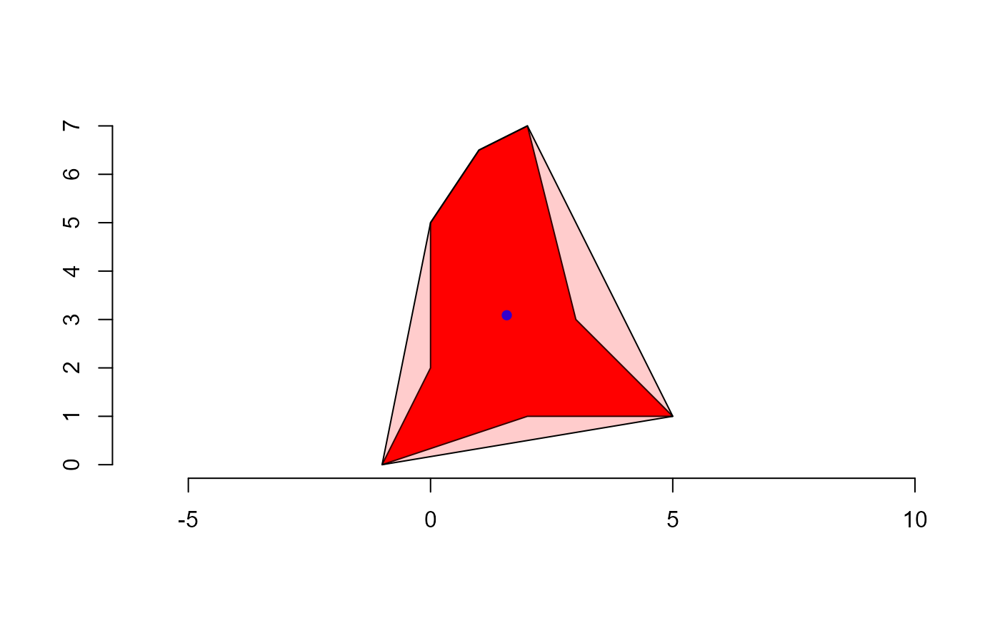
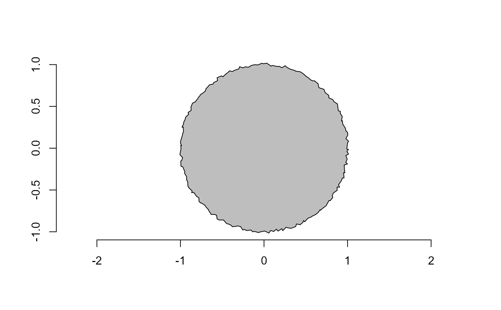

conv_hull()Compute convex hull of a set of points.poly_area()Compute the area of a polygon given by the vertices in the vectorsxandy.plot_contour()Plot contour lines usinggraphics::lines().
conv_hull(x, y = NULL, closed = TRUE) poly_area(x, y = NULL) plot_contour(x, y = NULL, col = "white", lwd = 1)
Arguments
| x, y | Coordinate vectors of points. This can be specified as two vectors
( |
|---|---|
| closed | If |
| col, lwd | The color and width of the lines, respectively. |
Value
conv_hull()returns a matrix withxandycoordinates for the convex hull in clockwise order. Ifxis a list, a list of points is returned.poly_area()returns adouble, or a list ifxis a list of vector points.plot_contour()returns adouble, or a list ifxis a list of vector points.
Details
poly_area() computes the area of a polygon given a set of x and y
coordinates using the Shoelace formula, as follows (Lee and Lim, 2017).
$$A=\frac{1}{2}\left|\sum_{i=1}^{n}\left(x_{i} y_{i+1}-x_{i+1}
y_{i}\right)\right|$$, where x and y are the coordinates which form the
corners of a polygon, and n is the number of coordinates.
References
Lee, Y., & Lim, W. (2017). Shoelace Formula: Connecting the Area of a Polygon and the Vector Cross Product. The Mathematics Teacher, 110(8), 631–636. doi:10.5951/MATHTEACHER.110.8.0631
Examples
# \donttest{ library(pliman) library(ggplot2) # A 2 x 2 square x <- c(0, 0, 2, 2, 0) y <- c(0, 2, 2, 0, 0) df <- data.frame(x = x, y = y) p <- ggplot(df, aes(x, y, group = 1)) + geom_polygon(fill = "red", alpha = 0.15) ppoly_area(x, y)#> [1] 4poly_area(df)#> [1] 4# The convex hull will be the vertices of the square (conv_square <- conv_hull(df))#> x y #> 4 2 0 #> 1 0 0 #> 2 0 2 #> 3 2 2 #> 4.1 2 0# polygon x <- c(0, 2, 2, 5, 2, -1, 0, 0) y <- c(5, 6, 3, 1, 1, 0, 2, 5) df_poly <- data.frame(x = x, y = y) # area of the polygon poly_area(df_poly)#> [1] 13p2 <- ggplot(df_poly, aes(x, y, group = 1)) + geom_path(color = "red") + geom_point(color = "red") plot(p2)# vertices of the convex hull (conv_poly <- conv_hull(df_poly))#> x y #> 4 5 1 #> 6 -1 0 #> 8 0 5 #> 2 2 6 #> 4.1 5 1# area of the convex hull poly_area(conv_poly)#> [1] 21# }